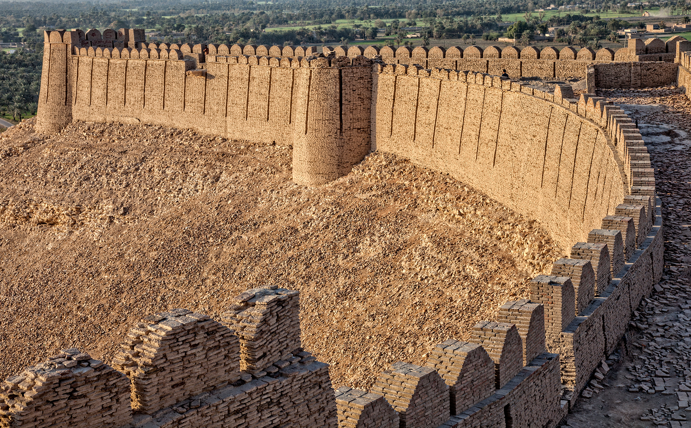

<div class="portfolio-single-load clearfix">
    <div class="custom-full-width-box">
        <div class="custom-container">
            <div class="custom-row align-items-center">
                <div class="custom-image-column">
                    
                </div>
                <div class="custom-text-column">
                    <h2 class="custom-heading">Khairpur</h2>
                    <p class="custom-paragraph">
                        Khairpur is the third-largest in terms of area and fifth-most populous district of Sindh province in Pakistan. It has 8 talukas and 89 union councils and 15 towns, with a total population of 2.4 million as of 2017. Mir sohrab Khan Talpur came from Iran. He founded KhairPur in 1783. Khairpur is also known as the home of esteemed Sufi mystic Sachal Sarmast, whose shrine is located near Khairpur. The Shrine of Sachal Sarmast is highly praised at Khairpur and visited by innumerable tourists every day.

                    </p>
                </div>
            </div>
        </div>
    </div><!-- .custom-full-width-box end -->

</div><!-- end single-project -->
